Wool
2
Wool is a natural protein fiber made usually from sheep or goat hair. Nowadays in many countries, wool is considered a biproduct from the production of meat.
200 to 300 liters per kilogram
1 year to decompose
14 kilograms CO2 per kilogram
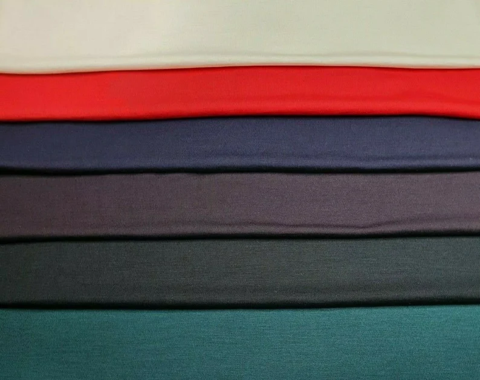
Leather
2
Leather is made from dressed or tanned animal skin, most often cows. Through the production process, it becomes very durable and water resistant.
40 to 45 liters per kilogram
1 year to decompose
17 kilograms CO2 per kilogram
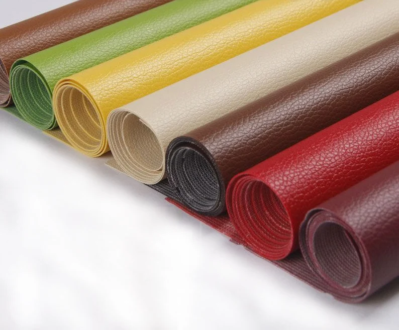
Silk
2
Silk is made from fibers created by the silkworm insects. Silk is known to be very delicate and soft, yet extremely durable and can absorb a large quantity of water without feeling wet.
40 to 45 liters per kilogram
1 year to decompose
17 kilograms CO2 per kilogram
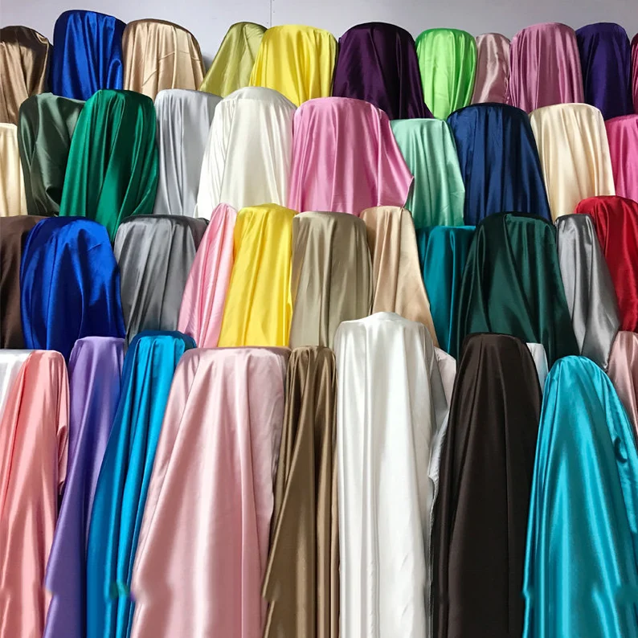
Cotton
2
Cotton is made from the natural fibers of cotton plants and is primarily composed of cellulose. It is one of the most widely used materials in the world and is known for its softness.
7.000 - 29.000 liters per kilogram
5 months to decompose
4.3 Kilograms per T-Shirt
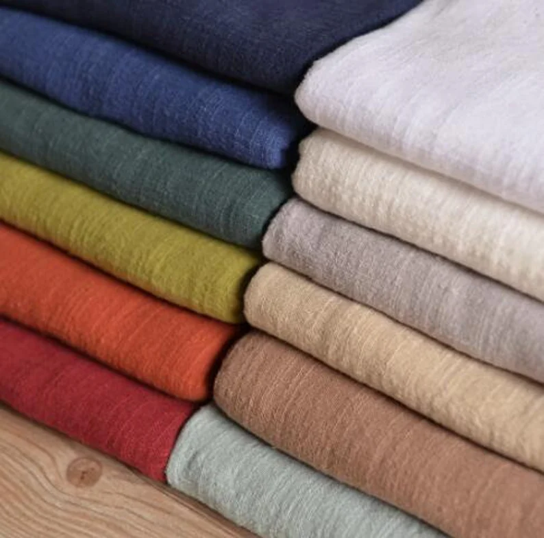
Rayon/Viscose
2
Rayon/viscose is a fabric made out of heavily processed wood pulp. There exist many kinds of rayon and it is often used to imitate other fabric types, such as silk, wool and cotton.
1000 liters per kilogram
6 weeks to decompose
Carbon disulfide
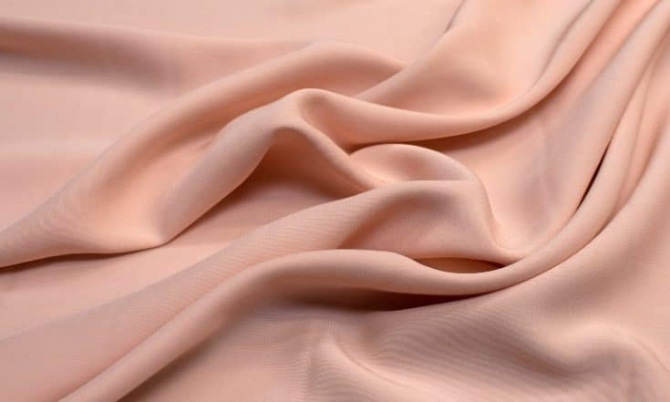
Hemp
2
Hemp fibers are made from the stems of the Cannabis Sativa plant and have a long historical presence. Hemp fabric is known for its durability and absorbency, and can be used both in its pure form and mixed with other fibers.
2700 liters per kilogram
About 6 months to decompose
Every ton can absorb 1.63 tons of CO2
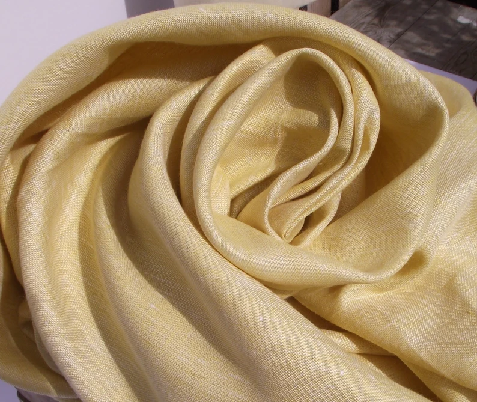
Linen
2
Linen is made from flax plant fibers. Linen is used especially in hot and humid climates, as it does not retain moisture for long periods of time. It is one of the world’s oldest fabrics.
200 to 300 liters per kilogram
About 2 weeks to decompose (Depending on weigth)
4.5 kilograms CO2 per kilogram
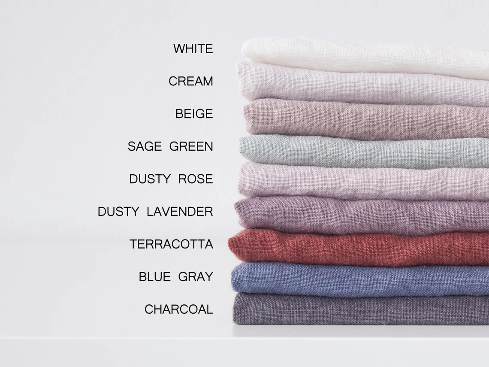
Polyester
2
Polyester is a type of plastic. It is found naturally in, for example, cuticles on plants, but can also be made synthetically, either based on petroleum products or more directly from biological material.
100 to 150 liters per kilogram
20 to 200 years to decompose
5.5 kilograms CO2 per kilogram
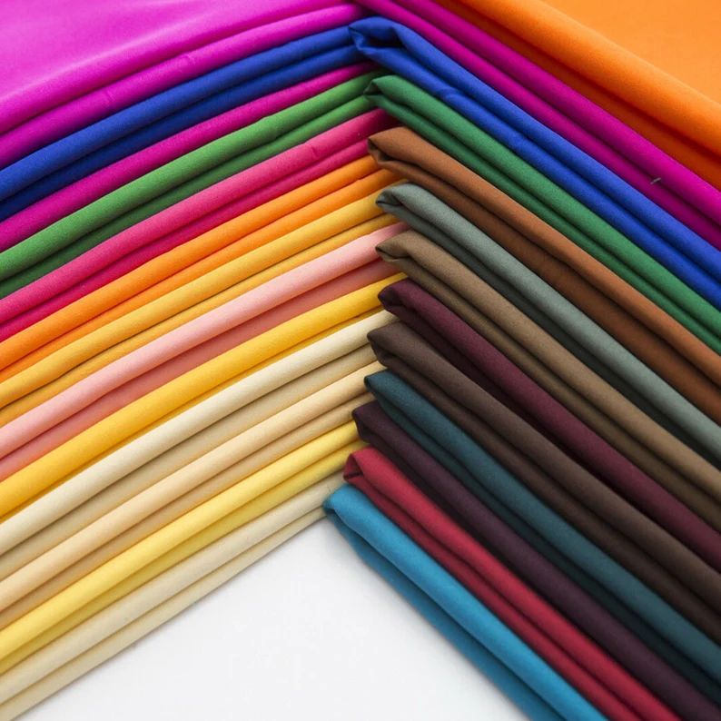
Nylon
2
Nylon is a trademark of polyamide and is textile fibers made from petrochemicals for example oil. Nylon is a cheap, light, smooth and strong material that can withstand moisture.
500 liters per kilogram
30 to 40 years to decompose
5.43 kilograms CO2 per kilogram, produces Nitrous Oxide
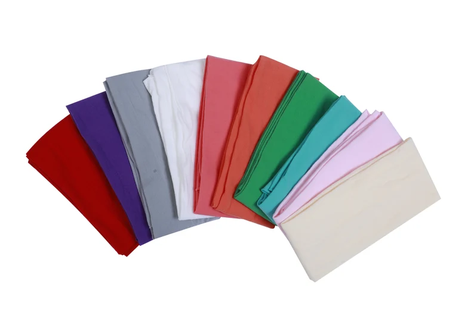
Spandex/lycra/elastane
2
Spandex is made of a synthetic polymer called polyurethane. The fabric is known for its elasticity, and it often used in jeans, underwear and sportswear.
100 liters per kilogram
20 to 200 years to biodegrade
20 kilograms CO2 per kilogram
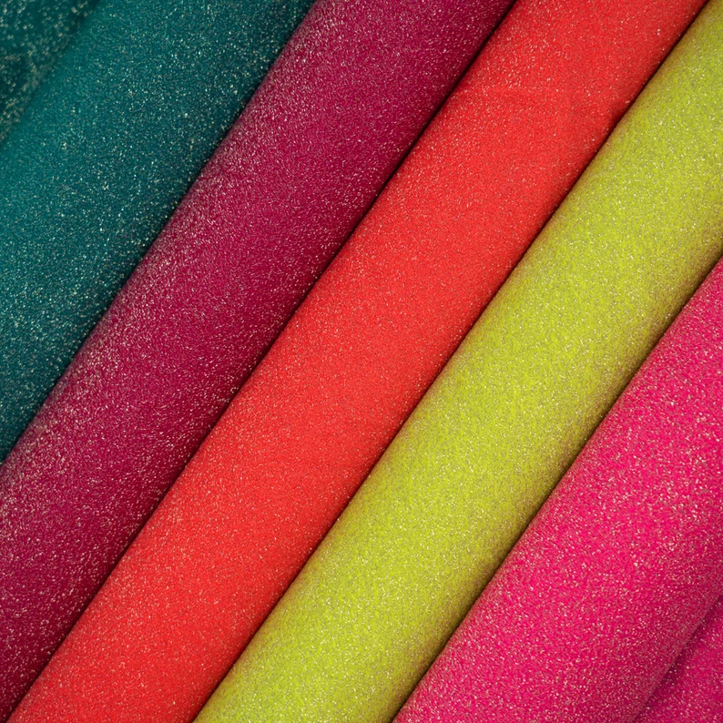
Rayon (regenerated cellulose/viscose)
2
Rayon is synthetic fibers made from cellulose, as well as viscose. The cellulose used is extracted from wood. In rayon textile fibers there are highly toxic carbon disulfide used.
65 liters per kilogram
20 to 200 years to biodegrade
30 kilograms CO2 per kilogram
Acrylic
2
Acrylic is a transparent plastic material, which is easy to fabricate. Acrylic is the weakest one of the synthetic fibers.
100 liters per kilogram
200 years to decompose
12 kilograms CO2 per kilogram
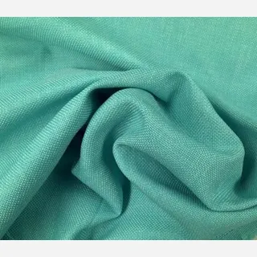